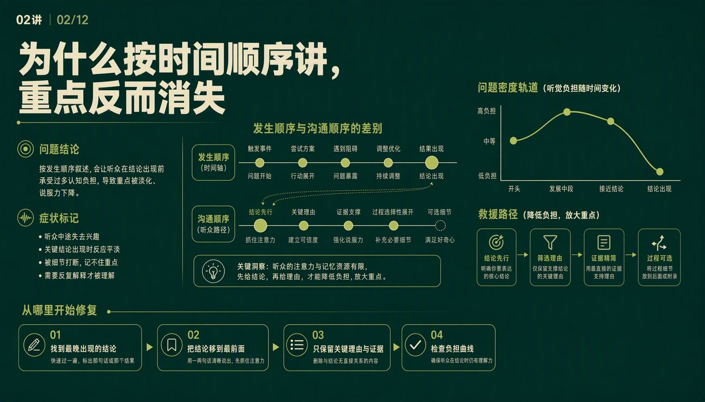
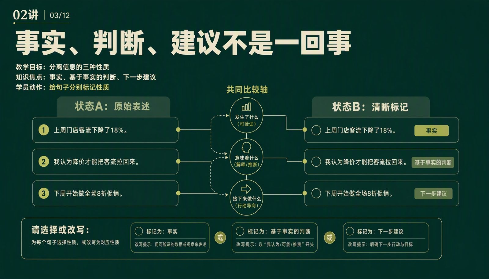
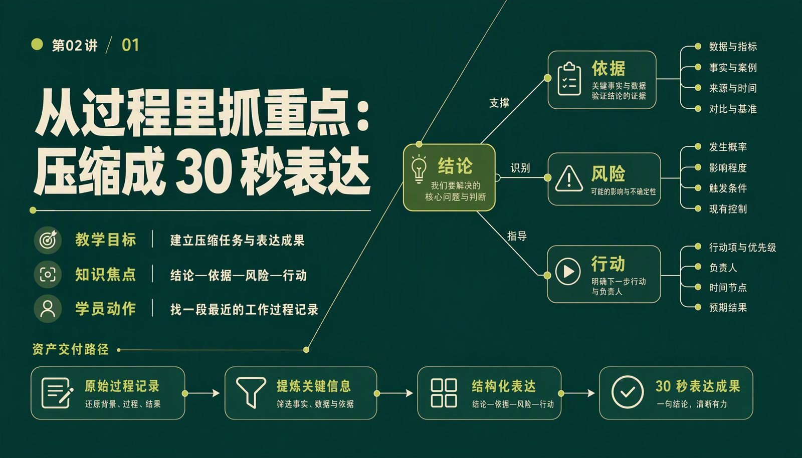

02 · 同一页，四份资产
四份东西挂在同一个 page_id 上，

四份东西挂在同一个 page_id 上，
所以不会各说各话。
教学目标、画面 Prompt、口播、学员动作，都从这一页的职责出发。换一页看看；有一项待确认，需要你来点。
它先从调研里挖出卖得动的方向：谁、要完成什么、卡在哪、学完拿出什么，四件事都得有事实撑腰。首讲试制过了人这一关，再为每一页成对生成 PPT 画面 Prompt 和数字人口播。缺事实就停下来问，不猜。

page08
page04
page01调研里事实和观点混在一起。它只把人群、任务、障碍、成果四件事都有事实撑腰、学完能练习也能验收的方向做成课。按「过筛」，看四个候选方向谁能留下。
教学目标、画面 Prompt、口播、学员动作，都从这一页的职责出发。换一页看看；有一项待确认，需要你来点。
点一页，再按「改一个数据」。分别用两种做法各试一次：一次性生成整讲 vs 每页身份锁定、按页返修。
先选一种做法，再改一次。
七个阶段各有一份唯一的产物。页面身份锁定之前，不生成任何画面和口播，避免视觉反过来改写课程。点任一阶段看细节。
任何一道没过，它就停下，保留状态和恢复命令，不会交一份「看起来完成」的结果。
$ runner validate lesson02 --gates 7 等待送审…
模型负责生成；这套系统负责让每一次交付都有来源、有状态、失败时有恢复路线。
读取请求和输入快照，识别输入类型，选择运行模式。
intent.py · input_extract.py目录、契约、教学计划、页面清单各管一件事，Prompt 不能反向改课程。
runner.py · schemas同一 page_id 下生成口播和画面 Prompt，润色后装配成制作文档。
narration · ppt-prompt登记父工件和内容哈希，逐项执行页面、旁白、事实和发布门禁。
artifact registry事件日志、checkpoint、回滚与重做、成本上限和路径保护。
steps.py · stability.py下一步验证：用一门真实的 9 讲课程跑完整链路，核对 19 次模型调用、逐页身份同步、人工确认次数，以及单页返修是否真的不需要重跑整讲。本页课件图由这个 Agent 产出的 Prompt 渲染；运行内容为一次真实输出的静态回放。
只有大纲和已确认的调研能当来源。画面上的字不能扩展课程事实。
没有教学目的的页不进下一步；口播讲关系，不朗读标题。
缺事实就问，门禁没过就停，留下恢复命令，交给人接着做。